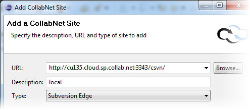
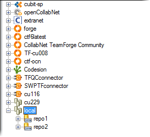

CollabNet Subversion Edge provides a powerful management console to install, operate
and manage Subversion repositories. In this Desktop, you can add the URL to your Subversion Edge
server and work with those repositories.
The
Subversion Edge project is on
open.collab.net.
-
In the CollabNet Sites
view, click the Add CollabNet Site icon.
-
Select Subversion Edge for the site type and click Next.
-
Provide the URL for the Subversion Edge server using one of these options.
- Select it from the drop-down list or enter a value, for example,
http://cu001.cloud.sp.collab.net:3343/csvn.
- Click Browse to discover the Subversion Edge servers on your
local LAN subnet, and select one from the list. This list dynamically adjusts as new servers
are discovered or leave the network.

-
Provide a description and
click Next.
-
Enter your credentials for the Subversion Edge console.
-
Click Finish.
Your
Subversion Edge server appears in the
CollabNet
Sites view.
